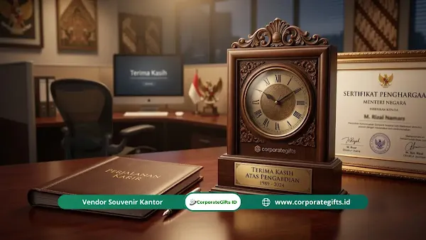

Corporate Gifts ID merangkum bahwa ide souvenir per milestone karyawan yang tepat berbeda di setiap tahap karier, mulai dari welcome kit onboarding, tumbler vacuum stainless atau card holder branded untuk ulang tahun kerja 1 tahun, jam tangan dan voucher staycation untuk milestone 3-5 tahun, hingga plakat kristal dan perhiasan premium untuk masa kerja 10 tahun ke atas serta pelepasan pensiun. Panduan ini membantu tim Human Resources (HR) menyusun program recognition terstruktur agar bentuk apresiasi memiliki resonansi emosional yang mendalam dan memperkuat retensi talenta.
Apa Itu Souvenir Milestone Karyawan dan Mengapa Penting?
Souvenir milestone karyawan adalah cinderamata atau paket hadiah korporat yang dihadiahkan manajemen perusahaan kepada anggota tim pada titik pencapaian karier tertentu, sebagai wujud pengakuan nyata atas kontribusi, loyalitas, dan dedikasi profesional mereka.
Milestone karyawan mencakup titik-titik krusial dalam perjalanan kerja seseorang, seperti hari pertama bergabung (onboarding), peringatan satu tahun kerja, kenaikan jenjang jabatan, pencapaian target strategis perusahaan, hingga fase purna tugas. Masing-masing momentum membawa bobot psikologis yang berbeda dan memerlukan sentuhan apresiasi yang selaras.
Berdasarkan riset Gallup (2023), karyawan yang menerima apresiasi secara bermakna memiliki tingkat keterlibatan kerja (employee engagement) hingga 3,6 kali lebih tinggi dibandingkan mereka yang tidak mendapatkan apresiasi terstruktur. Sementara laporan SHRM (Society for Human Resource Management) mengungkapkan bahwa implementasi program pengakuan karyawan yang konsisten mampu mereduksi tingkat perputaran tenaga kerja (turnover rate) hingga 31 persen.
Souvenir perayaan milestone bukan hanya benda pajangan. Saat seorang staf menaruh tumbler dengan grafir nama pribadinya di meja kerja atau memakai tas laptop berlogo elegan, barang tersebut menjadi jangkar visual atas apresiasi perusahaan yang jauh lebih membekas dibanding bonus uang tanpa memori fisik.
Apa Saja Milestone Utama dalam Perjalanan Karier Karyawan?
Tujuh milestone utama yang paling umum diadopsi dalam kebijakan employee recognition korporat modern meliputi masa onboarding, masa bakti 1 tahun, 3 tahun, 5 tahun, 10 tahun ke atas, promosi jenjang karier, serta pensiun.
1. Milestone Onboarding dan Hari Pertama Kerja
Hari pertama bekerja merupakan momen krusial pembentukan impresi awal karyawan terhadap budaya organisasi. Souvenir onboarding dalam format welcome kit karyawan berfungsi menyambut rekan kerja baru dan menumbuhkan rasa memiliki (sense of belonging) sejak hari pertama.
Pilihan item populer untuk paket onboarding mencakup notebook kulit berlogo, pulpen metal premium, tumbler stainless suhu, lanyard ID card eksklusif, serta kartu sambutan hangat bertanda tangan jajaran pimpinan divisi.
2. Milestone Ulang Tahun Kerja 1 Tahun
Tahun pertama adalah fase adaptasi paling menantang. Data industri menunjukkan sebagian besar turnover sukarela terjadi dalam kurun waktu 12 bulan pertama. Karyawan yang berhasil melewati tahun pertamanya dengan performa solid sangat layak menerima pengakuan istimewa.
Rekomendasi hadiah ulang tahun kerja 1 tahun meliputi smart tumbler berlayar LED suhu dengan grafir laser nama karyawan, card holder kulit sintetis mewah, sertifikat apresiasi berbingkai elegan, atau e-voucher belanja ritel.

Koleksi gift set fungsional berdesain eksklusif siap grafir logo dan nama untuk memperingati milestone masa kerja karyawan.
3. Milestone Ulang Tahun Kerja 3 dan 5 Tahun
Masa kerja 3 dan 5 tahun merefleksikan loyalitas jangka menengah yang sangat berharga. Pada fase ini, karyawan sudah menjadi kontributor inti bagi stabilitas operasional dan regenerasi tim, sehingga souvenir harus mencerminkan peningkatan nilai hadiah yang signifikan.
- Milestone 3 Tahun: Jam tangan elegan, lunch set stainless eksklusif, voucher staycation akhir pekan, atau pouch kulit multifungsi berinisial khusus.
- Milestone 5 Tahun: Gadget fungsional seperti power bank fast-charging bersertifikasi, earphone wireless TWS, plakat kayu akrilik berukir nama, atau koper kabin untuk keperluan dinas.
4. Milestone Ulang Tahun Kerja 10 Tahun dan Lebih
Dedikasi selama satu dekade atau lebih merupakan pencapaian luar biasa yang wajib dirayakan secara prestisius. Hadiah di level ini harus memancarkan kehormatan atas loyalitas yang telah teruji melewati berbagai siklus pertumbuhan perusahaan.
Opsi hadiah utama mencakup plakat logam berlapis emas, pen logam mewah berukir khusus (seperti seri fountain pen premium), perhiasan, logam mulia batangan mikro berwadah custom, atau paket liburan keluarga bersama tiket transportasi.
5. Milestone Promosi Jabatan
Promosi jabatan merupakan bentuk apresiasi atas perkembangan kompetensi dan tanggung jawab kepemimpinan baru. Souvenir di kategori ini lebih bernuansa perayaan kemajuan profesional (celebratory gift).
Item yang tepat mencakup portofolio kerja berbahan kulit asli, tas laptop eksekutif, kotak kartu nama magnetik metalik, buku literatur kepemimpinan pilihan, serta pena eksekutif yang menunjang penampilan profesional di hadapan mitra bisnis.
6. Milestone Pensiun (Purna Tugas)
Purna tugas menandai penutupan bab pengabdian panjang karyawan. Souvenir pensiun wajib memiliki nilai sentimental seumur hidup yang merangkum seluruh jejak kontribusi bersama institusi.
Pilihan souvenir pensiun yang sangat menyentuh meliputi album foto kenangan kerja berbalut kulit, plakat kristal 3D, jam meja ukir klasik berinskripsi masa bakti, serta sertifikat kehormatan bertanda tangan direktur utama.
Tabel Matriks Rekomendasi Souvenir per Milestone Karyawan
| Tahap Milestone | Makna Utama | Rekomendasi Souvenir | Karakter Personalisasi |
|---|---|---|---|
| Onboarding (Hari Pertama) | Penyambutan & pembentukan identitas budaya | Welcome kit (notebook, pulpen, tumbler, lanyard) | Logo perusahaan + kartu ucapan tim |
| 1 Tahun Kerja | Ketahanan adaptasi & komitmen awal | Tumbler termos LED, dompet kartu, e-voucher | Grafir laser nama karyawan |
| 3 Tahun Kerja | Loyalitas menengah & kontribusi stabil | Jam tangan casual, set makan premium, pouch kulit | Inisial nama + sertifikat pencapaian |
| 5 Tahun Kerja | Pilar andalan tim & dedikasi terbukti | Powerbank fast-charging, earphone TWS, koper kabin | Plakat akrilik kayu + logo 5 Years Service |
| 10+ Tahun Kerja | Kesetiaan legendaris & pengabdian panjang | Plakat logam emas, pulpen mewah, logam mulia mini | Ukiran masa bakti + sambutan Direksi |
| Promosi Jabatan | Kepemimpinan baru & pencapaian kompetensi | Tas kerja eksekutif, executive stationery set, buku | Emboss nama pada produk kulit |
| Pensiun / Purna Bakti | Warisan dedikasi & penghargaan seumur hidup | Plakat kristal 3D, album memori eksklusif, jam ukir | Pesan testimoni rekan sejawat & manajemen |
Apa Saja Kesalahan Umum dalam Memilih Souvenir Karyawan?
Banyak inisiatif employee recognition gagal memberikan dampak motivasi karena kekeliruan dalam perencanaan souvenir. Berikut 7 kesalahan yang wajib dihindari tim HR:
- Memilih Hadiah Terlalu Generik: Mengabaikan relasi emosional sehingga souvenir terkesan seperti sisa stok promosi massal.
- Tidak Ada Eskalasi Nilai: Memberikan souvenir dengan nominal dan kelas yang sama persis antara masa kerja 1 tahun dan 10 tahun.
- Mengabaikan Keragaman Demografi: Tidak memperhitungkan preferensi fungsional berdasarkan peran teknis, lapangan, atau manajerial.
- Keterlambatan Seremoni Penyerahan: Menyerahkan hadiah berminggu-minggu setelah tanggal milestone tercapai sehingga momentum kebanggaan sirna.
- Mengorbankan Kualitas Material: Memilih opsi termurah yang cepat rusak, yang justru mendegradasi citra kepedulian perusahaan.
- Tanpa Pesan Personal Manajer: Hadiah diserahkan tanpa kartu bertuliskan apresiasi tulus dari atasan langsung.
- Barang Kurang Fungsional: Memilih cinderamata yang tidak memiliki kegunaan nyata sehingga berakhir teronggok di lemari arsip.
Bagaimana Cara Membangun Program Souvenir Milestone yang Sistematis?
Agar program pengakuan karyawan berjalan konsisten tanpa membebani operasional harian HR, bangun kerangka kerja melalui empat tahapan terstruktur:
Langkah 1: Pemetaan Milestone Prioritas
Tentukan titik evaluasi apresiasi yang paling selaras dengan visi institusi. Prioritaskan momen paling berdampak terhadap retensi seperti 1 tahun, 3 tahun, 5 tahun, dan kenaikan pangkat.
Langkah 2: Standarisasi Anggaran dan Kebijakan
Dokumentasikan tier budget dalam standar operasional HR agar terdapat keadilan perlakuan antardivisi dan transparansi pengadaan.
Langkah 3: Pemilihan Vendor Suvenir Terpercaya
Bekerja sama dengan vendor souvenir B2B seperti CorporateGifts.ID yang mampu menyediakan katalog terkurasi, kustomisasi logo presisi, serta fleksibilitas minimum order.
Langkah 4: Otomatisasi Jadwal Berbasis HRIS
Integrasikan data masa kerja karyawan dengan kalender pengingat sistem HRIS setidaknya 30 hari sebelum hari H agar proses produksi dan personalisasi nama selesai tepat waktu.
Souvenir Fisik vs. Pengalaman: Mana yang Lebih Efektif untuk Karyawan?
Souvenir fisik menghadirkan memorabilia yang dapat disentuh dan dilihat setiap hari di ruang kerja, sementara hadiah pengalaman menawarkan momen rekreasi dan kebersamaan keluarga yang berkesan mendalam.
| Parameter Evaluasi | Souvenir Fisik (Barang) | Hadiah Pengalaman (Voucher/Trip) |
|---|---|---|
| Daya Tahan Pengingat | Sangat lama, berfungsi harian sebagai jangkar visual | Bersifat temporal dalam memori kenangan |
| Fleksibilitas Branding | Tinggi (bisa cetak logo, grafir nama, dan tanggal) | Terbatas pada amplop atau sertifikat voucher |
| Kesesuaian Milestone | Sangat tepat untuk onboarding, 1-5 tahun, & promosi | Ideal untuk reward 5-10 tahun atau liburan purna tugas |
| Pendekatan Terbaik | Kombinasi Hybrid: Menghadiahkan merchandise fisik berlogo eksklusif bersama voucher pengalaman staycation/makan malam. | |
Pertanyaan Seputar Panduan Ide Souvenir per Milestone Karyawan (FAQ)
Kesimpulan
Panduan ide souvenir per milestone karyawan merupakan pilar fundamental bagi manajemen SDM dalam merawat retensi talenta terbaik. Souvenir yang tepat sasaran, diserahkan tepat waktu, serta dilengkapi pesan pengakuan tulus akan menumbuhkan loyalitas mendalam dan meminimalkan perputaran karyawan.
Mulailah merancang standardisasi program milestone dengan memetakan titik perayaan utama, menentukan skala anggaran per tier masa kerja, dan bermitra dengan vendor terpercaya untuk menghadirkan produk berkualitas tinggi berbalut identitas institusi Anda.